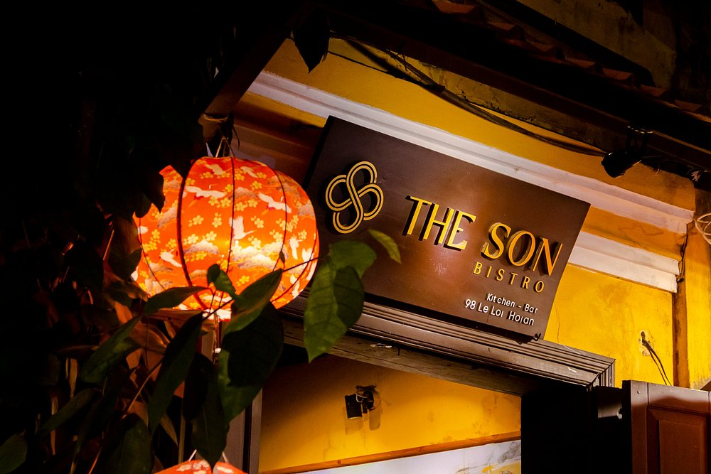
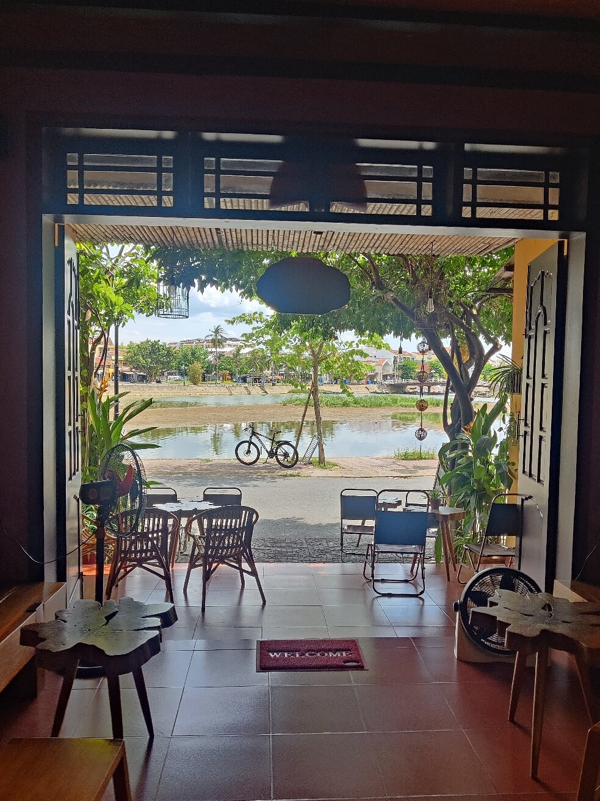
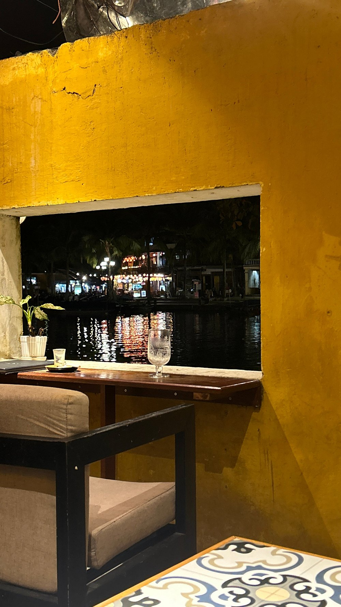

Traditional Architecture
Hoi-An is known for its well-preserved traditional architecture, with buildings that reflect a mix of different cultural influences from China, Japan, and Europe. The town's narrow streets and colorful buildings create a charming atmosphere that transports visitors back in time.
Between the old merchant houses you will also notice yellow-washed colonial buildings with tall green shutters, left behind by the French era. Their warm walls, mossy tiled roofs, and bougainvillea spilling over the balconies make the narrow streets of the Old Town feel like a living painting, with a new splash of color around every corner.
By night, Hoi-An comes alive with thousands of colorful silk lanterns that light up the streets and reflect on the river. Visitors can enjoy local dishes like cao lau noodles and banh mi, get clothes made by the town’s skilled tailors, or simply wander the quiet lanes by bike. It is a place where history, food, and beauty come together at a slow, relaxed pace.
. Bar-Bistro .
My favorite bars and bistros in Hoi-An

The Son bistro
A quiet room in a 100 year-old building in the heart of Hội An Old Town, with paper lanterns overhead and the street framed in the doorway.
Address:
98 Lê Lợi, Hội An Old Town, Vietnam
What I like about it
Beneath the glow of lantern lights, The Son Bistro became a familiar meeting place for the holiday season. Here, guests gathered with loved ones, shared festive meals, savored delightful drinks, and enjoyed live music in a cozy, welcoming setting.

Hey Day Café
Great place to have a coffee in a little quieter part of Hoi An at the river. Great tunes on the radio, lovely decor, delicious coffee. A dream find!
Address:
49B Công Nữ Ngọc Hoa, Hoi An, Vietnam
What I like about it
A small cafe located in the heart of the old town, the ancient space opposite the romantic Hoai River, a gentle drink suitable for Westerners and Asians. Coming here, guests will enjoy the really quiet space as the space of the old town.

Kalmody Café
A window seat, a good meal, and Hoi An passing by. Sometimes, the best way to experience a place is to sit back, enjoy the flavors, and watch everyday life unfold just outside your window.
Address:
105 Bach Dang Street, Hoi An, Vietnam
What I like about it
From local flavors to the little moments around the table, discovering a place is about more than just the food. It's about slowing down, trying something new, and taking home a memory of Vietnam. At Kalmody, hospitality is more than simply serving — it's about making you feel comfortable, cared for, and at ease.